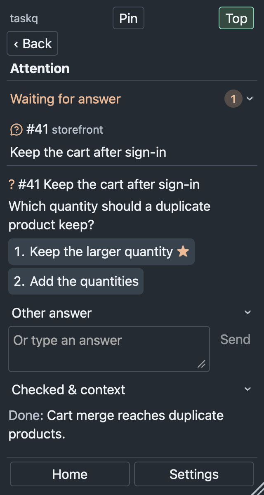
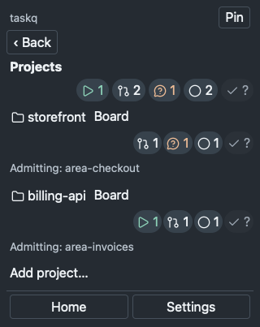
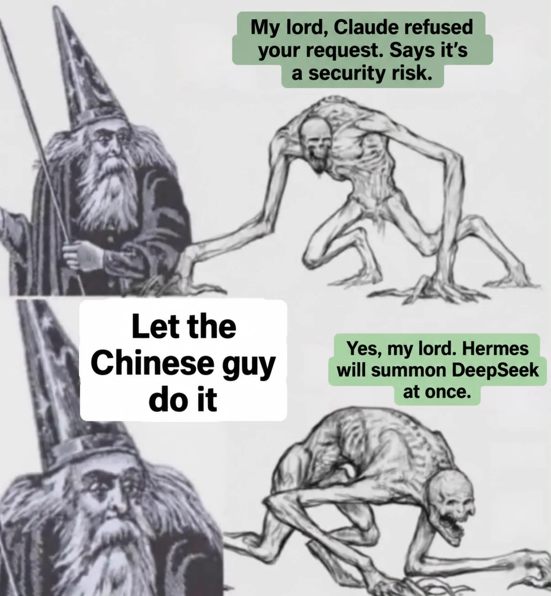

Agents working.
Install taskq from https://github.com/taskqorg/taskq and set it up for this project.
Paste into Claude or Codex; the agent confirms setup changes, installs taskq, connects the board and becomes the manager.
For a new project:
Install taskq from https://github.com/taskqorg/taskq and create project <name> from <idea or folder>.
Your repository board is the task list; your usual AI apps do the work.
What you get
- Tasks are issues on GitHub or GitLab.
- The service runs Claude or Codex workers within each computer's configured limits.
- A worker's question waits for your answer.
- A reviewer checks the result; accepted work publishes through the configured branch or PR route.
- The tray menu shows questions, admission controls and a day's history.
- Several computers share one board.
See the queue
Synthetic storefront data, captured from the dark tray menu. These are examples, not a live project's progress. Open an image for its original size.
A question with its choices.

Project queues at a glance. Closed totals remain unknown in this fixture.

From any agent chat
The tray and the CLI are not the only way in. Any agent session that has taskq available, not only Claude or Codex, runs the same commands from its chat, so you ask in words and the agent runs them. The outputs below are real; the conversation lines are condensed.
Board state and a worker question. In a project manager chat:
Owner: What is on the board?
Manager: runs taskq status:
In work 3 · Waiting for answer 0 · Ready 0
| Task | State | Runtime | Session |
|---|---|---|---|
| #1156 Runner injects the contract, the specq core and an index; r… | doing | claude | win: Remote Control unknown |
| #1185 Standalone telemetry: local store, analysis guide and comma… | review | codex | win: starting |
| #1189 README: taskq from any agent chat, board-status and telemet… | doing | claude | mac |
Hosts: hermes-fra1 v4.2.0 77s focus off, win v4.2.0 118s, mac v4.2.0 2m
Manager: #1048 asks:
Problem: A1 needs native Windows click and OS-denial evidence; desktop control is unavailable in this worker session.
1. Continue in a Windows worker with native desktop control; keep A1 unchanged. ★
2. Authorize implementation and API checks here, with owner-run click and denial acceptance before closure.
Owner: 2. Implement now with API and unit checks; native click evidence moves to the Windows qualification task.
Manager: runs taskq answer 1048 --text "2. Implement now with API and unit checks, ..."; the worker resumes and hands in a result 23 minutes later.
Telemetry on request. In the agent console, taskq profile reads this host's retained log, no board calls:
Owner: Where did tasks wait longest in the last day?
Agent: runs taskq profile tasks --since 24h:
States by p95
| State | Runtime | Host | Count | p50/p95/max s |
|---|---|---|---:|---|
| later | none | none | 6 | 2473.000/10771.000/10771.000 |
| doing | claude | mac | 3 | 449.000/924.000/924.000 |
| review | codex | mac | 4 | 277.000/336.000/336.000 |
| review | claude | mac | 1 | 236.000/236.000/236.000 |
| doing | codex | mac | 1 | 205.000/205.000/205.000 |
Agent: Parked tasks waited longest; active work stayed under 16 minutes at p95.
taskq profile export prints the raw records as JSON lines for your own analysis; taskq profile board reports board calls. Missing data reads unknown, never zero.
From request to reviewed work
Illustrative dialogue, not recorded sessions. The three scenes follow one storefront change; task numbers and outcomes are examples. Start with an installed project, an accessible board and a manager that has loaded the project rules.
1. Agree the work before starting
Customers lose their cart when they sign in. The owner also wants them returned to the page they came from.
Owner: Fix sign-in so customers can continue shopping. Plan the work first.
Manager: Should this include merging a guest cart into an existing account cart, or just returning to the right page? That changes the acceptance checks.
Owner: Both. Keep them as separate tasks. Show me the checks before starting.
Manager: I suggest #41 for cart preservation and #43 for the return page. Check both fresh and existing account carts, and reject external redirect destinations. The tasks can run independently.
Owner: Agreed. File them held, then start those two.
The manager creates the agreed issues, reads them back and starts them. Eligible workers run within the host's limits. The observable result is two linked issues with acceptance checks and their actual queue states; filing them alone does not prove work started.
Sources: UC-02, UC-03, UC-07.
2. Resolve a question without guessing
The cart worker finds that the same product can exist in both carts. Task #41 waits for an owner decision.
Owner: What is blocking the cart fix?
Manager: #41 needs a quantity rule: 1. Keep the larger quantity, or 2. Add the quantities. The worker recommends 1 to avoid accidental duplicates.
Owner: Keep the larger quantity. Does that also cover a product that is now out of stock?
Manager: No. That needs a separate acceptance condition; the current choice only settles duplicate quantities.
Owner: Answer #41 with 1. Also tell the worker to retain unavailable items with a warning, without allowing checkout for them.
The manager reads the current question, posts the selected answer and sends the additional instruction to #41. Readback must show both before reporting success. The service resumes the same attempt when it can. If the question changed, the manager refreshes it instead of answering an old card.
Source: UC-09. This example uses the manager and board; it does not promise every proposed inline conversation control.
3. Accept evidence, then deliver
The redirect worker submits #43 with a candidate commit, checks and a PR. Creating the PR has not delivered the fix to users.
Owner: Is the redirect fix ready?
Manager: The result has passing checks, but the browser evidence does not cover an expired session. Accept this scope or send it back for that case?
Owner: Send it back. Expired sessions must return safely too.
Manager: The reviewer returned #43 with that missing check. The replacement result now includes it; the reviewer must check the new commit and its CI.
Owner: Once that exact candidate passes review, publish the PR through our agreed route.
The reviewer checks the replacement against acceptance and the configured publication requirements. Only successful publication readback establishes that the branch or PR was published. Deployment to a running storefront needs its own evidence; closing a TaskQ task does not prove it.
Source: UC-14. The manager relays evidence and owner decisions; it does not replace the reviewer.
Let the other agent do it

A task is not tied to the agent or computer that started it. Real board log of #976; the conversation lines are condensed.
Manager: The Codex worker on #976 asks again; its sandbox cannot capture the tray:
Problem: A2/A3 remain untestable here: native capture again times out with XPC errors and zero images; host memory probe fails.
1. Continue PR #982 on a macOS worker with working WKWebView capture and host probes; retain all acceptance gates. ★
2. Keep PR #982 as draft and defer this slice until the required macOS verification environment is available.
Owner: 1. Give it to Claude on the Mac.
Manager: moves the label run-codex to run-claude, adds host-mac and runs taskq answer 976.1.
The Codex attempt hands the task back with taskq requeue; the board shows the new worker continuing the same PR:
taskq: spawn worker claude:3c0621ed-… mac
taskq: result 0c13cad0c5422cbdb42b3f0a0d504272e176b7bc attempt 6160200303
Checks: taskq tray --snapshot macOS light+dark -- 40 images per fixture, footer fit fixed
taskq: close attempt 6160353477
Thirteen minutes from the switch to a result, four more to close. The same move sends a task to another host (host-<name>), to a soft runtime preference (prefer-codex, prefer-claude) or back to the queue with new instructions (taskq requeue N --text T, taskq later N).
Agents: install, setup, commands and development are in taskq.md.
Verify a downloaded release file: check it against the release's SHA256SUMS (shasum -a 256 -c SHA256SUMS --ignore-missing),
then trace it to the workflow run that built it with gh attestation verify <file> --repo taskqorg/taskq.
License: MIT.
If taskq saves you time, buy me a coffee.